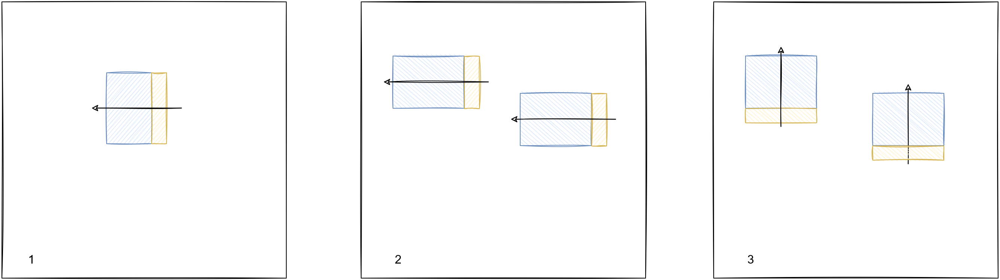

近期组了一台双路 Epyc 的服务器，这篇博客记录组机器时候的一些坑点，供朋友们参考。
Epyc 是 AMD 为服务器设计的 CPU，大概长这样。
单路 - 多路
仔细观察上图的 CPU 型号为 7302P，同时 AMD 还有一款 CPU 型号为 7302，带 P 后缀的说明这个 CPU 只支持单插槽的，如果想组双路的话就要避开这类型号。除此之外这 XXXX 与 XXXXP 的性能几乎相同。

CPU 代号
首先看 Epyc 的代号名称。
| 代数 | 代号 | 发布年份 |
|---|---|---|
| 1 | Naple | 2017 |
| 2 | Rome | 2019 |
| 3 | Milan(-X) | 2021 |
| 4 | … | 2022 |
四代代号比较多这里不写了，目前 3/4 代大船没靠岸大多也买不起。而一代和二代之间则优先推荐二代（一代是 14nm，二代是台积电 7nm）。在 CPU 的代号中，代数体现在最后一个数字上，上面提到的 7302 就是二代 CPU。中间两位数字简单地说就是越大越好，感兴趣的朋友可以去 wiki 看看售价和参数。
主板
我选择的是超微 H11DSi，海鲜市场 1250 买的，这里说一下几种型号的差别。
H11SSL 系列只支持一个 CPU，如果上面选择了 XXXXP 的话可以考虑，这三款具体的区别我没有研究过。
H11DSi 的两款都支持双路，NT 版支持两个 NVMe 接口，如果像我一样选择 H11DSi 的话后续就只能上 PCI-e 的 SSD 了。
风扇
组机器之前我十分害怕服务器暴力扇的噪音，多次在某宝浏览猫扇，然后卖主板的商家推荐我上拆机风扇，用了之后感觉很好，这里安利一下，原因有几点。
- 几乎没有声音，甚至不如空调声音响
- 肯定能装上去
- 风道方向正常
组完之后几乎没有风扇声，即使在跑 cinebench multicore 的时候，也能在听不到风扇声的情况下把温度压在 60 度之内，另一个原因是我的 CPU TDP 不高，没超频的情况下产生的热量还是比较少的。
服务器主板上的散热器是特制的，有严格的安装步骤和螺丝孔位，如果选择家用散热器，可能会遇到装不上去的情况。
风道方向比较抽象，我画了张图来说明：

图中 1 是家用 CPU 风扇的安装方法，而 2 是服务器 CPU 风扇的安装方法，区别是风扇被安装在 CPU 的窄边（主板就是这么设计的）。如果我们按照家用风扇的装法强行安装到服务器 CPU 上，风道就会变成 3 这个样子，往上吹了，当然也有可能根本装不上（摊手。
机箱
主板的选择会对机箱尺寸提出要求，我选择的 H11DSi 是 E-ATX 尺寸的，买的时候千万看好别拿到手发现塞不进去了。
显示
H11DSi 主板上有集成显卡，但是只支持 VGA 接口，不建议买 HDMI 的亮机卡（反正我买了点不亮），最好直接用 VGA 接口的显示器（可能比亮机卡更便宜）。
完
就写到这里，后续有想到的坑点再补充。